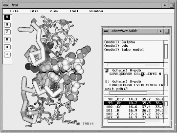
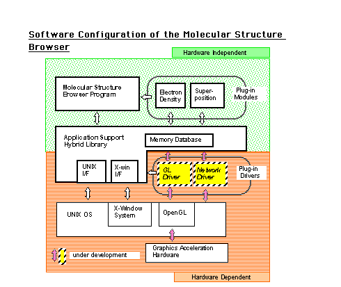

MOSBY
MOSBY
(Molecular Object Scripting for Biological analYsis)
MOSBY is a software suite for the analysis of molecular structure and structural biology studies. The program is under major reconstruction, including molecular movie functions. After cleanups of the code, reorganized programs will be released.
 TOWARD MOLECULAR MOVIES
TOWARD MOLECULAR MOVIES
Some of prototype code will demonstrates how making the molecular movies are
supported in this software platfrom.
To run avobe script, Luxinia interpreter is required. To test the scripts, please download Luxinia interpreter (ver.1400) from
Luxinia home page.
The software development is on going but a release is planed at end of this year. It would be another few week to summarize current protypes, and we will continue our software devleopment. Currently, Luxinia only runs on Windows systems, XP or highter, with OpenGL-1.4, 256MB RAM, 1500MHz processor.
PREVIOUS DEVELOPMENTS
MOSBY was a prgoram previosly developed as MOlecular Structure Browser with analYsis.
It was under a major change using the Lua langauge as a main
infrastructure of the graphical application program. This change
allow following new functionalities.
- A Lua Module for protein models
- Scripting support --- a set of command for molecular rendering.
- Simple drawings --- simple graphics primitives to annotate molecular figures.
- Anaylsis scripts ---- additional scripts for calcurations using atomic coordinates of the molecule.
- A coarse grained dynamics models for protein
For a folding simulation for the helix based membrane proteins, a coarse grained dynamics modelswith the amino acid based potential funciton is developed. The code is under cleanup process, and some demonstrations are available.
- EZLUA: a simple and easy Lua interface method
A simple library
is available, an experimental wrapper functions for Lua API. The code is tested
for our software development described in a reference paper:
-
Yutaka Ueno (2009) Scripting of molecular structure viewer for data analysis using Lua Language interpreter. in Computational BIology: New Research, Nova publishing, ISBN: 978-1-60692-040-4, pp. 389-406.
Our software development projects are based on following previous distribution of MOSBY. There are also another Lua interpreter that is dedicated for the image analysis, named BESPA. In particular, image processing methods and algoritms for single particle analysis of macromolecules using electron microscopy are studied. It also shares the same modules as MOSBY, and will be integrated in future.
BASICS OF
MOSBY
In using MOSBY, most operations are in the main menu bar on top of
the window. Items in the tool bar at the left side select the mode of
mouse operation. Basic functions of atomic coordinates of proteins
includes:
- Molecular models of wire frame, ball & stick, tube and
space filling.
- Real-time viewing manipulation of molecules by mouse
operations with depth-cueing, clipping, scroll, and perspective.
- A sequence window provides the amino acid sequence view of the
protein. The selection of residue also cooperates with the
molecular model window and vice versa.
The graphics rendering is reasonalbe both quality and speed on
most conventional workstations or personal computers. The rock
animation with four cyclic frames provides smooth horizontal rotation
that is independent of the number of atoms. Additionally, the
qualities of cylinder and sphere were improved by introducing edge
lines between primitives far in depth.
EXTENDING MOSBY
There are several plug-ins to enhance functions of MOSBY.
- An Electron Density Plug-in. This module reads an electron density
map file and visualizes the isosurfaces of density function into the
molecular model by an algorithm similar to the marching cube. The
plug-in has a dialog box for the parameter set of isosurface values
that is prepared in a file. By trapping an order function o the
rendering atomic model, the plug-ins depict various kinds of pictures
into the molecular model window.
- A Superposition Plug-in. With
specified two sets of atoms defined as molecular groups in our
browser program, the coordinates of the first group are translated to
fit those of the second. Since the plug-in only describes its
algorithm, it is easy for users to customize or replace it.
Furthermore, functions for editing atomic data in our browser enables
another plug-in of molecular modeling with a customi ed graphical
user interface.
- Filter Plug-ins. The browser program loads the filter plug-ins
which access atomic data in different kinds of formats. A filter
plug-in defines a new order that is a function of the filter and
registers it into the list of filters. A new format is supported
simply by modifying an existing sample filter.
MOSBY uses the dynamic linking method, so that extension
modules act as if it is a part of the host program. Actually, detailed method and interface to MOSBY are rather complicated, we can take
a source code of those plug-in modules as a template to make
another extension module.
DISTRIBUTION
MOSBY is a software copyrighted by AIST. An academic license to
use this software is provided without fee. Please contact to us about another
license for the commercial use.
README
a gzipped tar archive
--- beta (ver 0.955)
--- Our software distribution server is now under rework.
This is a tarball of our beta release dated 2007 Jan.
Porting information about Windows and MacOS are also provided.
Please excse us for stopping a service from the previous website
at http://www.etl.go.jp/~ueno/bioinfo/mosby/
A SNAPSHOT OF
MOSBY

OVERVIEW OF THE SOFTWARE ARCHITECTURE

Yutaka Ueno, Computational Biology Research Center, AIST,
uenoyt(at)ni.aist.go.jp
Last updated : Jun 2 2008